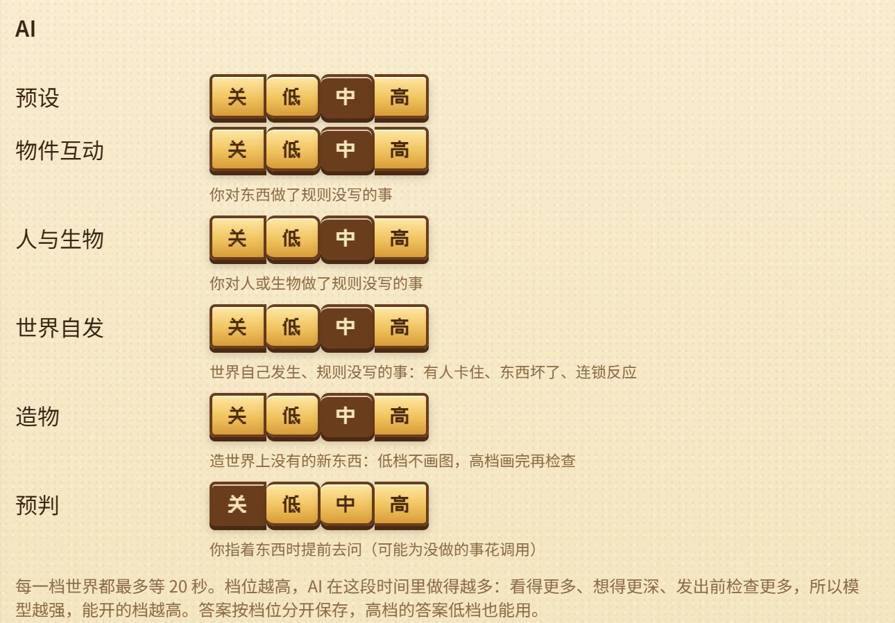

让一个神经世界模型往篝火上泼水，它会给你画出一团蒸汽。走开一分钟再回来，那堆篝火可能已经不在了。让一个手工制作的游戏做同样的事，火每次都会熄灭，对每个玩家都一样，多少年都不变——除非没人想到要写"火会熄灭"，那样的话，什么也不会发生。
OpenWorld 想同时要这两样：一个像游戏一样精确、持久的角色扮演世界，在玩家尝试没人预料到的事情时，依然能给出回应。它的状态和规则全都是代码；代码写不到的地方，由语言模型补写，只写一次，所有人共用。这第一篇讲它怎么做到，以及为什么我们认为它能做大。
01通往开放世界的两条路
我们说的开放世界，是指你可以尝试一件没人计划过的事，而世界会给出合理的回应。今天通往它的路有两条，各自成功在对方失败的地方。
学习得到的世界模型——Genie、GameNGen、Oasis 以及它们的后继者——根据你的操作逐帧生成世界。它们接受任何输入，在这个意义上是开放的。但世界只存在于像素和很短的上下文里：GameNGen 大约记得三秒，Genie 记得十六帧，Genie 3 的视觉记忆大约一分钟。离开一个房间再回来，房间可能已经变了。而且每一帧都要让一个大网络算一遍，每个玩家都要算。
手工打造的游戏正好相反。《矮人要塞》、上古卷轴系列、《旷野之息》的化学引擎：广阔、持久、严格一致，运行几乎不要成本。但它们是封闭的。设计者没有预料到的互动，根本不存在。
02开放是稀疏的
我们的出发点是：开放是稀疏而有结构的。玩家可以尝试任何事，但他们真正会尝试的事，落在一个长尾分布的情境集合里：某一类东西，在它规则的某一处，遇到某一种事件。一个情境一旦有了答案，之后它的每一次出现都只是普通的游戏过程。
所以只有在前沿——某个情境第一次被触及的时候——才需要开放。前沿之后的一切最好交给代码：精确、持久、可组合、可读，而且重新运行不花任何代价。这就引出一种分工：
- 代码模拟一切，每一帧都是：人们过着各自的日子，火沿着干草蔓延、被雨浇灭，故事按它的轨道推进。
- 模型只在前沿写代码，也就是世界遇到规则留空的情境时。
- 它写下的东西会被保留，放进所有玩家共享的规则库，每个情境只付一次代价。
03规则属于物
OpenWorld 里的每一次变化，都是某个事件的结果；而每个结果，都由这件事所发生在的那个东西的规则决定。篝火的规则说明雨落在篝火上会怎样；史莱姆的规则说明火碰到史莱姆会怎样。规则可以读取世界上的任何东西，但只能改写它自己的那个东西。要影响别的东西，它就向那个东西发出一个事件，由对方按自己的本性作答。
规则针对的是种类——类型、标签和状态——从不针对某一个特定的桶或某一只特定的史莱姆，所以一条规则写一次，就对所有同类成立。事件本身来自一个小而封闭的集合：有意的行为、来自别的东西的冲击、接触、碰撞、时间流逝、越过阈值、被看见、被卡住、被损坏。
一条规则是一棵条件树，结果写在叶子上。有些叶子是刻意留空的：那是某个东西的本性还没被写下来的地方。一只碰到火的火焰史莱姆。一把用在绞盘上的斧头。一根递给狼的绳子。
04一个事件，许多后果
因为一切都是带着规则的东西，没有什么事是孤立发生的。闪电点燃一棵枯树。雨浇灭一堆篝火。有人趁着暴风雨偷东西，于是贴出了悬赏。每个事件都会波及它周围的人、地方和东西，而它们又会波及更多。
这也是为什么模型的回答必须是一条规则，而不是一张图。规则能和已有的物理组合在一起：一旦摆渡人知道被困在雨里时该守在火边，火、雨和她身边的人都照旧运转。
05当规则写到尽头
当一个事件走到留空的叶子时，引擎只停住它所发生在的那个东西——世界的其余部分照常运行——并向 modder 发出一个请求：事件本身、它在规则树里走过的路径、参与者和它们的周边，以及一份写明规则能表达什么的规范。
modder 先在世界已有的东西里找答案：先是请求本身涉及的类型，再是已有种类的目录。只有都不合适时，它才会创造一个新种类，并配上一张它自己的小图。它的回答是一条针对那个类型的规则，放在那片留空的叶子上。
引擎把这个回答当作不可信的代码。它检查规则的格式、对本体的引用，以及它是否只改写自己的那个东西；在沙盒里重放触发它的事件；再让一个对抗性的审查者去和这条规则对着玩，寻找刷资源、卡死和失控的连锁反应。只有当沙盒能复现问题——有这条规则时出现、没有时不出现——这个发现才算数。全部通过后，规则才进入规则库。规则只能填补留空的叶子，所以模型永远改不了作者写好的东西。
一次回答大约十秒，花费大约五美分，而且只付一次：规则库是共享的，下一个遇到同样情境的玩家直接把它当普通代码运行。玩家可以按工作的种类，从关闭到高，自己选择要让模型做多少。

06一千张地图，以及接下来
因为每一帧的循环里完全没有模型，世界可以做到内容允许的任何大小。OpenWorld 有 1,024 张地图——59 张手工制作，965 张分布在圣城周围的六个地区——780 户人家里的 1,654 个人，各有自己的样子和一天的安排，还有 1,013 种、共 40,562 件物品。它在一个浏览器标签页里运行。离玩家很远的地图会沉睡，等你回来时再补上这段时间。
这个世界本身记得"极夜"：那时太阳消失了，直到圣者阿斯特拉承受了五种圣刑，太阳才重新升起。如今白昼又一天天变短，一位朝圣者带着身边的妖精，从山上走了下来。
还有第二条线索我们很快会写：modder 在它所工作的世界不断变大的同时改进自己——保留记忆、为自己编写技能、修订自己的工作流程。我们每两周发一篇：规则是怎么搭起来的，modder 怎么作答，玩家最先尝试什么，以及世界从他们身上学到了什么。